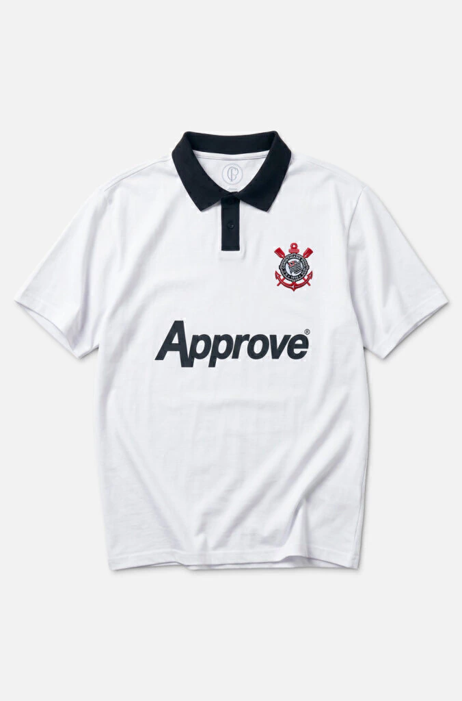
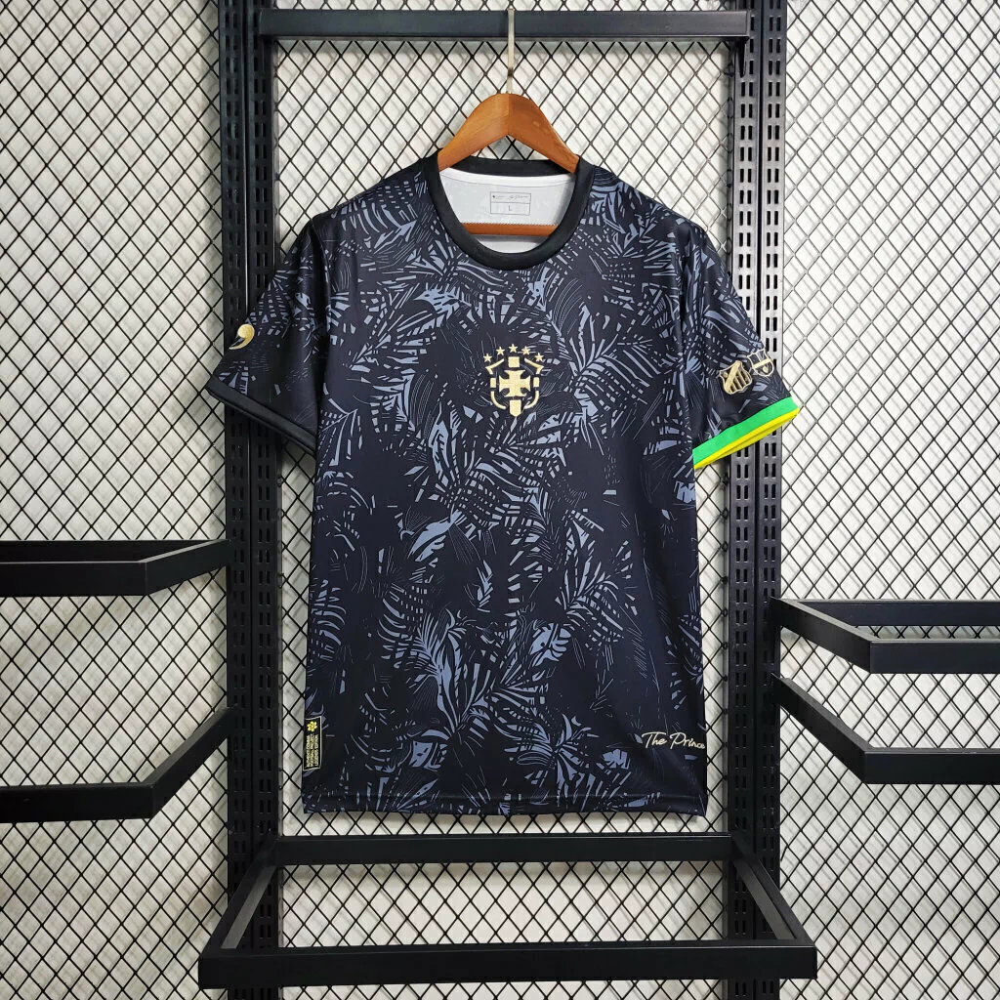
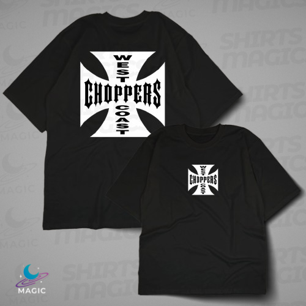

Oversized Black
Camiseta oversized com proposta streetwear premium, feita para unir conforto, estilo e identidade urbana.
Aqui você encontra modelos de camisas que ainda estão em desenvolvimento. Esses projetos fazem parte do processo criativo da marca A/R e ainda não estão disponíveis para compra.
Camiseta oversized com proposta streetwear premium, feita para unir conforto, estilo e identidade urbana.

A camiseta Alvinegro Style representa a essência do Corinthians em uma peça moderna e cheia de atitude. Inspirada nas tradicionais cores preto e branco, ela traduz a identidade forte e marcante do clube em um visual urbano e estiloso. Com um design pensado para o dia a dia, essa camiseta une conforto e personalidade, sendo perfeita para quem quer expressar sua paixão pelo Timão de forma casual e autêntica..

A camiseta The Prince é inspirada no talento, na ousadia e na elegância de Neymar dentro e fora dos campos. Representando o apelido de “príncipe do futebol”, essa peça traduz estilo, confiança e habilidade em um design moderno e marcante. Com uma proposta urbana e cheia de atitude, a camiseta combina conforto e personalidade, sendo ideal para quem admira o futebol arte e a trajetória de um dos jogadores mais talentosos do mundo.

A camiseta West Coast – Brian O’Conner Edition é inspirada no lendário universo de Velozes e Furiosos, representando o estilo e a atitude do personagem Brian O’Conner. Ela traz a essência das ruas da Califórnia, onde velocidade, liberdade e adrenalina fazem parte da cultura street racing..